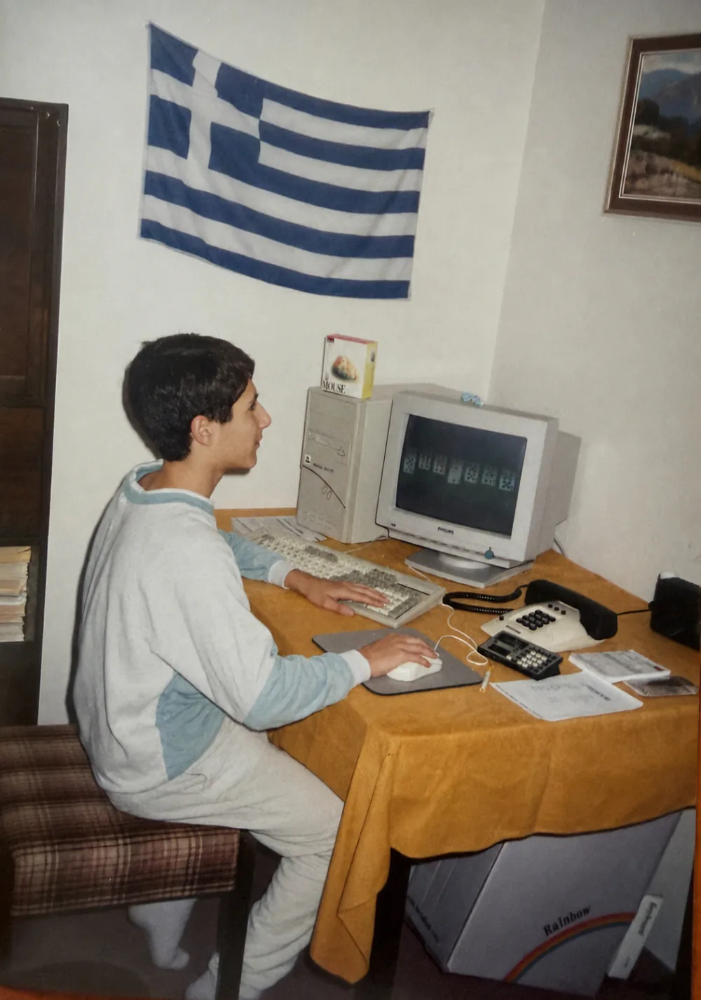

Expanze do zahraničí
Každá další země nemusí znamenat další samostatný e-shop, administraci a datový chaos.
Stavíme řešení s jedním technologickým základem, centrální správou a dostatečnou flexibilitou pro pravidla jednotlivých trhů.
CEO a spolumajitel 3IT · 19 let v e-commerce
Pomáhám středním a velkým firmám růst a expandovat do zahraničí prostřednictvím B2C a B2B e-shopů na míru.
V 3IT stavíme e-commerce řešení pro firmy, které přerostly standardní platformy a potřebují dlouhodobého partnera pro svůj další růst.
Mimo e-commerce miluji dobrou kávu a auta.
U zavedených firem často vidím stejný scénář: byznys roste, ale technologie zůstává pozadu.
Přibývají ruční procesy, složitá napojení, datové můstky, middleware a kompromisy způsobené limity platformy. Každá další země, B2B požadavek nebo nový prodejní kanál je potom dražší a pomalejší.
V 3IT pomáháme tento technologický strop odstranit.
Každá další země nemusí znamenat další samostatný e-shop, administraci a datový chaos.
Stavíme řešení s jedním technologickým základem, centrální správou a dostatečnou flexibilitou pro pravidla jednotlivých trhů.
Individuální ceny, schvalování, opakované objednávky a práce obchodníků nemusí zůstávat v e-mailech, tabulkách a ručních procesech.
Pomáháme firmám digitalizovat B2B prodej a propojit e-shop s ERP, sklady i dalšími podnikovými systémy.
AI není náplast na špatně postavený e-shop. Je to nový způsob, jakým budou zákazníci produkty hledat, porovnávat a nakupovat.
Firmy na něj potřebují připravit kvalitní produktová data, otevřená rozhraní, procesy a spolehlivý technologický základ.

Woo · Individualization · Positivity · Communication · Learner
Kombinace těchto talentů mi pomáhá snadno navazovat vztahy, učit se a stavět řešení na míru konkrétním lidem a firmám.
Od prvního webu k vedení 3IT
K technologiím jsem měl blízko už od dětství. První zakázkový web jsem naprogramoval ještě na gymnáziu, následoval první primitivní e-shop (detaily vám řeknu někdy raději osobně). Následně jsem vystudoval na VŠB-TUO informační technologie (Bc, Ing), vytvořil informační systém pro cestovní kancelář a mnoho dalšího komerčně používaného SW.
Postupně jsem zjistil, že mě nezajímá jen samotné programování. Začalo mě fascinovat především to, jak mohou technologie ovlivňovat procesy firem a zkušenost jejich zákazníků.
Dnes, po 19 letech v e-commerce, vedu 3IT a propojuji svět byznysu, technologií a lidí. Díky technickým kořenům rozumím vývojářům, ale při rozhodování se vždy snažím začít obchodním cílem a skutečnou hodnotou pro zákazníka.
Technologie pro mě nejsou cílem. Jsou nástrojem, který má firmě pomoci růst, zjednodušovat její fungování a otevírat nové možnosti.
Výběr toho, co jsem napsal nebo kde jsem se objevil - chronologicky, od nejnovějšího.


Nejlepší nápady totiž nevznikají u pracovního stolu.
Změna prostředí, fyzický výkon a hluboké rozhovory s přáteli mě neuvěřitelně posouvají. Pomáhají mi získat odstup, podívat se na věci z jiné perspektivy a vracet se do práce s čistou hlavou a novou energií.
Dosud jsem navštívil 33 zemí. Měl jsem štěstí poznat s přáteli například Sokotru, Maroko, Gruzii, Arménii, Jordánsko i desítky evropských států. Každé místo mi ukázalo jiný způsob života, kulturu a pohled na svět.
O víkendech mě ale nejčastěji potkáte mnohem blíž - v Beskydech na Lysé hoře nebo ve slovenských horách.
Nejvýše jsem zatím vystoupal na Jabal Toubkal v Maroku, nejvyšší horu severní Afriky, která dosahuje výšky 4 167 metrů nad mořem.
K horám se u mě postupně přidalo i otužování. S kolegy pravidelně absolvujeme výšlap na Lysou horu v mrazu jen v botách a kraťasech.
Byl jsem součástí největšího českého otužileckého výšlapu, zapsaného v České knize rekordů a doloženého certifikátem.
A když zrovna nejsem v horách, třikrát týdně mě můžete ráno před prací potkat ve fitku v Ostravě-Porubě. Pohyb je pro mě důležitým zdrojem energie, disciplíny a psychické odolnosti.
Od dětství jsem miloval auta. Taťka si mě vždy posadil na klín u řidiče - já ještě nedosáhl na pedály a při pomalé jízdě po parkovišti nadšeně točil volantem naší stodvacítky.
Řidičák jsem si udělal než mi bylo 18 a pak čekal na narozeniny, abych si ho mohl vyzvednout. Vždycky, když naši odjeli a nechali auto na parkovišti, koupili jsme s bráchou za peníze na nákup benzín… a frrr…
Odmalička jsem snil o autě na víkendy, na zábavu a radost. Když nám s bráchou bylo kolem 5–7 let, do krve jsme se hádali, jestli je lepší Ferrari, nebo Porsche. Já argumentoval, že s Porsche se dá jezdit všude. A pak to přišlo - jedno jsem si koupil.
Zbožňuju komunitu lidí kolem téhle značky. Společná setkání a projížďky s kamarády mě nabíjejí energií, kterou pak používám k posunu naší firmy 3IT.cz.
Jednoho dne jsem na Instagramu zareagoval na příspěvek Míry Hejdy. Ozvala se produkční, že mě vybrali k natáčení dalšího dílu - až pak jsem zjistil, že to byla soutěž. Dostal jsem instrukce, ať přijedu se svým sporťákem do Sedlčan.
Čekal jsem projížďku se supersporty… a přišlo úplně jiné překvapení: rallycross za volantem Felicie. Nejvíc TOP zážitek! Doporučuju - vezměte pár kamarádů a jeďte tam.
A finále? Přijel závodní speciál divize Supercars - Audi S2 - a svezení s pilotem, čtyřnásobným vítězem České trofeje. Byl to druhý moment v životě, kdy jsem se jako spolujezdec fakt bál (poprvé to bylo v Lamborghini Huracán, 325 km/h v Německu). Míro a týme, díky za tenhle zážitek!
Video bylo staženo. Díl byl vysílán v TV Prima a byl dostupný na YouTube. Videa sponzorovala společnost AutaSuper.
Michalis Katapodis pomáhá středním a velkým firmám s B2C a B2B e-shopy na míru, expanzí do zahraničí a nasazením AI v e-commerce. Vede softwarovou firmu 3IT.
3IT je softwarová firma, kterou Michalis Katapodis spoluvlastní a vede. Staví e-commerce řešení pro firmy, které přerostly standardní platformy - B2C a B2B e-shopy na míru, expanzi do zahraničí a integrace s ERP.
Michalis Katapodis se e-commerce věnuje více než 19 let. Vystudoval informační technologie na VŠB - Technická univerzita Ostrava.
Michalis Katapodis působí v Ostravě v České republice, kde sídlí i firma 3IT.
Nezávaznou třicetiminutovou konzultaci zdarma si lze rezervovat na cal.com/katapodis/30min. Probrat se dá stav e-shopu, plánovaná expanze i příprava na AI v e-commerce.
Napsat lze na e-mail michalis.katapodis@3it.cz nebo přes LinkedIn (linkedin.com/in/katapodis).
Pokud hledáte partnera pro růst vašeho e-commerce byznysu, rád si s vámi popovídám.
Napište mi e-mail · Chcete být součástí týmu? Volné pozice